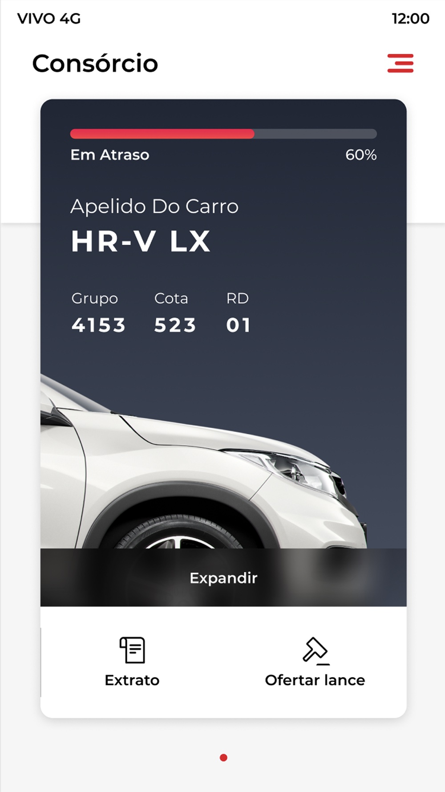

Designing experiences,
from products to play.
10+ years turning complex systems into interfaces people can use, and games people want to play. I'm David, a Senior UX Designer at Venturus and a Game Designer at Harpia Games.
- 10+ years in UX/UI
- 40k wishlists · Dark Island on Steam
- Design systems adopted by clients
Featured work
Three projects, one for each kind of role I am looking for.
 Software UX · live prototypesAtrium: campus AV controlBlocked actions explain themselves. A control plane for campus infrastructure, with three clickable prototypes and the requirements behind them.
Software UX · live prototypesAtrium: campus AV controlBlocked actions explain themselves. A control plane for campus infrastructure, with three clickable prototypes and the requirements behind them. Game UI · on Steam · 40k wishlistsDark Island: Faded MemoriesAll the UI and the logo for a dark fantasy game: controller-first, silver frames, gold selection.
Game UI · on Steam · 40k wishlistsDark Island: Faded MemoriesAll the UI and the logo for a dark fantasy game: controller-first, silver frames, gold selection. Game design · co-opWild SagaA cooperative 2.5D adventure for ages 10+, where cooperation is the core mechanic, from puzzles to counter-attack combat.
Game design · co-opWild SagaA cooperative 2.5D adventure for ages 10+, where cooperation is the core mechanic, from puzzles to counter-attack combat.
All work
Filter by the kind of work. Employer and period are on each card.
Design the states, not only the screens. Errors, confirmations and statuses are designed as screens of their own, with the rules written next to them, and everything is organised so an engineer can build from it.
A look of its own for each game, controls that shape the layout, and every state (pause, loss, win, locked, not enough currency) designed as a screen.
Two very different scales, a two-semester team game and a game jam, with the same habit: a clear core idea, then the systems that serve it.
- Software UXAtrium: campus AV controlBlocked actions explain themselves. A control tool for campus infrastructure, with three clickable prototypes.
- Live prototypeAtrium: try itOpen the prototypes: infrastructure, devices and device recovery.
 Design systemAML design systemBuilt in one week by 3 designers, fully adopted by the client, praised by developers for its handoff.
Design systemAML design systemBuilt in one week by 3 designers, fully adopted by the client, praised by developers for its handoff. Software UXCompal · New ShopfloorSign-in flows, menus, and users and permissions for a factory system.
Software UXCompal · New ShopfloorSign-in flows, menus, and users and permissions for a factory system.
Mobile UXHSF · Financial ServicesA before and after redesign of the consortium card, with a slider.- DEarlier workDaitan projectsCall center, airport biometrics, bank SMS, learning tool and telecom interfaces.
- Game UIDark Island: Faded MemoriesController-first UI, kit and logo for a dark fantasy game on Steam. 40k wishlists.
 Game UITiny HeroesA hero hub, wireframes to final screens and a portrait animation.
Game UITiny HeroesA hero hub, wireframes to final screens and a portrait animation. Game UI · playableThe Dark Maze of MythosMobile screens, UI kit and a playable prototype of the maze game.
Game UI · playableThe Dark Maze of MythosMobile screens, UI kit and a playable prototype of the maze game. Editor toolUnity Character SelectorA Unity editor panel to view, animate and recolour characters.
Editor toolUnity Character SelectorA Unity editor panel to view, animate and recolour characters.- Game design docWild SagaA co-op 2.5D adventure where cooperation is the mechanic, with a candid post mortem.
 Game design docThe Dark Maze of MythosA mobile horror maze: your torch is both your eyes and your beacon.
Game design docThe Dark Maze of MythosA mobile horror maze: your torch is both your eyes and your beacon.
About me
UX designer and game designer. I design interfaces and systems for both: ten-plus years from web and editorial design at Chuva Inc., through design systems at Daitan, to product design at Venturus, plus game design at Harpia Games since 2019.
Based in Campinas, Brazil. Portuguese (native), English (full professional).
Let's talk
Looking for a UI/UX designer for software or games, or a game designer? Send me a message.